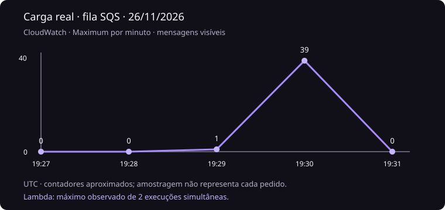

CLOUD COMPUTING · AULAS 10 A 14
Estude. Responda.
Comprove.
Reuni neste caderno as evidências da Loja de Roupas para atender aos requisitos da matéria de Cloud Computing. ADS · 4º módulo · 2026.2 · Professor Sebastião Rogério.
Suas alterações ficam somente neste navegador, em localStorage (armazenamento local). Não sincronizam entre dispositivos e podem ser perdidas ao limpar os dados do site. Exporte uma cópia para guardar, caso necessário.
Carregando o caderno...
Arquitetura e evidências
O projeto usa dois catálogos: a vitrine principal guarda os produtos no SQLite, e a Vitrine Cloud usa o DynamoDB. Eles são independentes, então uma alteração em um não aparece automaticamente no outro.
HTTPS · mesma origem
estáticos e rotas de API
HTML · CSS · JS · Outfit
FastAPI → SQLite · Coding
Lambda privada → endpoint → DynamoDB
Efeito único por ID · Falhas → DLQ → CloudWatch → SNS
As duas trilhas foram implementadas e testadas em 26/11/2026. A assinatura SNS está confirmada, verificada pela AWS; o recebimento do alerta histórico por e-mail não foi comprovado. O cadastro e o gerenciamento estão abertos para testar a demo; a origem da API continua privada.
| Componente | Situação | Evidência |
|---|

Abrir evidências AWS sanitizadas em JSON. Carga: 100 respostas 202, média de 319 ms, máximo de 1,55 s; 98 abaixo de 1 s. Foram usadas cinco chamadas paralelas para respeitar a cota real de dez execuções da conta, sem solicitar aumento. Cento e um pedidos válidos concluídos; entrega repetida manteve 101 efeitos; pedido 99 falhou três vezes e chegou à DLQ. Alarme mudou de OK para ALARM às 19:34:01 UTC e acionou SNS. E-mail ainda não comprovado.
Custos e limites
Infraestrutura Coding existente: estimativa de US$ 10,42/mês para 730 horas de EC2, volume e IPv4, antes de impostos e tráfego. CloudFront e S3 acrescentam consumo variável. A trilha Cloud proposta acrescenta duas tabelas sob demanda, filas, funções e dois alarmes: US$ 0,20/mês de alarmes antes de franquias, mais consumo. Estimativa de até US$ 1/mês para uso didático baixo. O orçamento está configurado e a assinatura SNS está confirmada.
Os gateway endpoints de S3 e DynamoDB não têm cobrança por hora. A rede não usa NAT nem endpoints de interface. As franquias dependem da conta. O orçamento da loja é de US$ 1, com alerta a 80%: ele avisa sobre o consumo, mas não bloqueia gastos nem substitui os outros orçamentos da conta.
| Cenário | Uso assumido | Base estimada |
|---|---|---|
| Normal | 100 pedidos, 10 mil consultas, 0,01 GB de logs e 1 MB de dados | US$ 0,49/mês |
| Pico no mês | 10 mil pedidos, 100 mil consultas, 0,1 GB de logs e 10 MB de dados | US$ 0,78/mês |
| Segunda região AWS | Hipótese de preços iguais e cópia independente do perfil normal | + US$ 0,49/mês, mais replicação e transferência; não é cotação regional |
Modelo reproduzível em tools/estimar_custos_cloud.py: produtor 256 MB/0,1 s; consumidor 128 MB/1 s; catálogo 256 MB/0,2 s; Scan pequeno de uma página; itens até 1 KB; hipótese de 648 mil chamadas SQS ociosas/mês mais três por pedido; dois alarmes. A base não inclui a EC2 Coding, CloudFront, S3 compartilhado, SNS, transferência, impostos ou trabalho operacional. Duração, polling e consumo real podem variar. Preços consultados em 26/11/2026 nas tabelas oficiais AWS; HTTP API no primeiro nível: US$ 1 por milhão; Lambda: US$ 0,20 por milhão de invocações, além da duração.
Outro provedor, hipótese portável para análise: uma VM DigitalOcean Basic de 1 GiB por US$ 6/mês e Spaces por US$ 5/mês dão uma base de US$ 11/mês; duas VMs elevam essa base a US$ 17. Preços consultados em 26/11/2026. Essa base não entrega automaticamente equivalentes gerenciados de DynamoDB/SQS nem alta disponibilidade: exige adaptar código, dados, fila e operação. Transferência excedente, backups, balanceador e trabalho de migração são adicionais. Não houve contratação ou implantação em outro provedor/região.
Portabilidade e lock-in
Esta comparação segue o roteiro público da disciplina. Como o documento complementar não foi publicado, os seis serviços abaixo foram escolhidos com base no que a loja utiliza.
| Serviço | Dependência | Alternativa e esforço |
|---|---|---|
| S3 | Objetos, políticas e lifecycle | Armazenamento compatível com API S3; médio: exportar objetos e adaptar IAM/regras. |
| API Gateway | Rotas, integração e limites | Proxy HTTP como Nginx; médio: reconstruir autenticação e operação. |
| Lambda | Eventos, execução e permissões | Processo Python em servidor; médio: adaptar handler e escalar/operar processos. |
| DynamoDB | Chaves, condições e consultas | Banco relacional ou de documentos; alto: exportar dados, remodelar acesso e testar concorrência. |
| VPC | Rotas, SG e endpoints | Rede privada e firewall de outro provedor; médio/alto: recriar topologia e conectividade. |
| SQS | Visibilidade, redrive e eventos | RabbitMQ ou outra fila; alto: revisar garantias, consumidores e recuperação. |
O DynamoDB exige mais cuidado em uma migração porque não basta copiar os dados: também é preciso revisar as consultas e as condições de gravação. CloudFront, CloudWatch e SNS completam a estrutura com distribuição, monitoramento e alertas.
Operação sob falha
Quando surgir um alerta, o primeiro passo é conferir a idade da fila, os erros, a DLQ e os serviços envolvidos. Antes de aumentar a carga, é preciso controlar a entrada e o consumo. Depois de corrigir a causa, as mensagens podem ser reenviadas em pequenos lotes, mantendo os mesmos IDs e sem expor dados pessoais. Não se deve usar Purge para limpar a fila de produção. Se for necessário voltar à versão anterior, os backups permitem restaurar o código e a configuração, preservando o SQLite atual.
Fontes e rastreabilidade
Incidente oficial, horários PDT: início 19/10/2025 23:48; DNS restaurado 20/10 02:25; DynamoDB recuperado 02:40; EC2 recuperada 13:50; NLB normalizado 14:09. A janela principal termina 14:20. O relato registra recuperação residual de Redshift até 21/10 04:05, além da simplificação dos slides. Em Brasília, acrescentar quatro horas.
Relatório oficial do incidente: AWS · 19–20/10/2025. Padrões: Amazon Builders’ Library. Regulação europeia: Regulamento (UE) 2023/2854. Os números de mercado são atribuídos ao material, com data, sem validação independente. Data Act não é legislação brasileira.
O caderno segue o roteiro público porque o documento complementar não foi publicado. Não houve envio pelo Teams nesta execução. As evidências vêm de respostas reais da AWS e de um gráfico feito com as métricas coletadas; não são capturas do console. O fundo usa a imagem original da boutique, convertida para WebP e ampliada para 3840 × 2160. A imagem não é 4K nativa.
Objetivos
Etapas e conferência
Use as respostas de referência para revisar o conteúdo. Suas respostas e sua autoavaliação ficam separadas dos registros reais da AWS. Os dez cenários da aula 14 são SIMULAÇÕES: servem para estudar e não provocam falhas na loja.